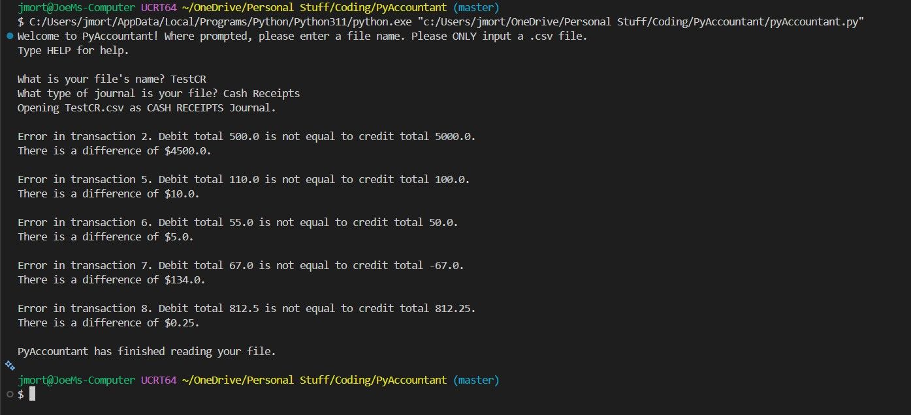

PyAccountant

PyAccountant was an idea I had during my first year at college. In Game Design that Autumn, I had my first exposure to .csv files and using code to manipulate their data. That Spring, it occured to me while trying to balance a series of entries for Financial Accounting that I could create a program to find the errors I wasn't picking up. As I entered into my Sophomore year, I put the idea into something tangible.
PyAccountant will read accounting journals submitted as .csv files, which Microsoft Excel and Google Sheets files can be made into. It will prompt the user to give their file name, validate the file's existance, and then prompt the user for the journal type. The program will then total the debits and credits in each entry, check if they are equal, and inform the user of any errors as it finds them. PyAccountant does not fix errors, but it does help to find typos or other mistakes made in data entry.